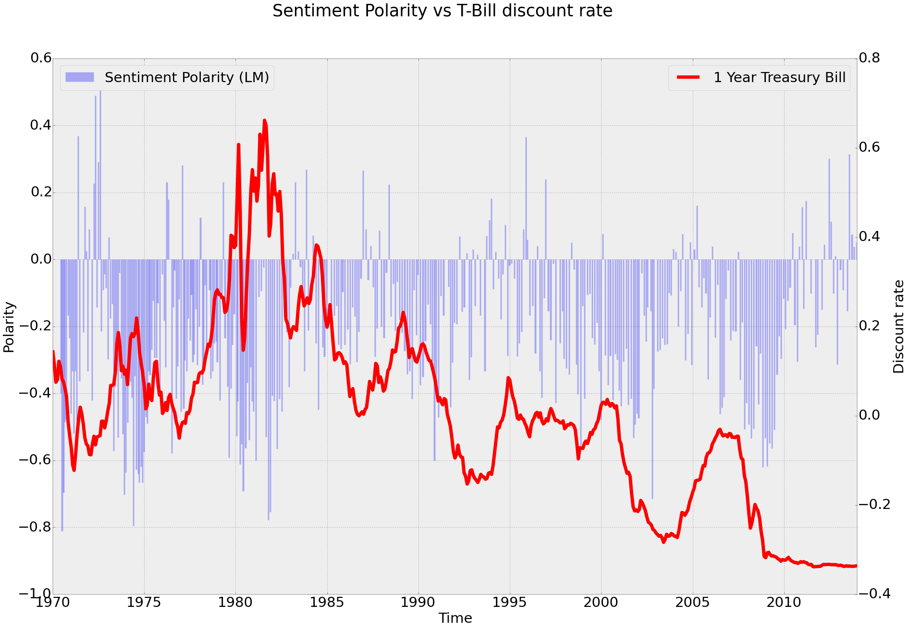

Add Flippa auction to calendar
This is a nasty hack to add a link to Flippa which will put you on the road to adding an event to your Google Calendar at the auction end time.
javascript:void($( "#auctionstatus" ).append( "<a href='" + "http://google.co.uk/search?q=" + encodeURI("google calendar add " + $("#auctionstatus").attr("title").substr(41, 19)) + "'>Add to calendar</a>"));
Time tracking tool
Another working methodology post, in order to remind me of which tool I used. In order to keep track of tasks and time spent when in the commandline (where I am most of the time) TimeBook is a great tool. It allows you do:
t in "task i am working on"
<do some work>
t out
Then there will be an entry in your timesheet with today’s date and the time spent working on the task.
Updating my web design stack
For data intensive and service related projects I always prefer to use the simplicity of Tornado. Recently I had occasion to consider a more classic CMS type of application. I looked at Django a number of years ago and was largely unimpressed, probably because the need at the time was not for a CMS platform and the design of the admin interface seemed a bit late 90’s.
My opinion has changed however with the Wagtail project from Torchbox. Very nice design and some of the key Django apps, like South, bundled in.
Also, I have been impressed with the Bower project - which provides a package manager for front end components on Node.
Anyway, to get these fancy Javascript tools working in a Python virtualenv do the following from within a virtualenv:
pip install nodeenv
nodeenv --python-virtualenv # activate nodeenv in the current virtualenv
npm install -g bower
Great!
Clojure setup
I’m having lots of fun learning Clojure. There are a couple of decent ways to be productive in Vim with Clojure, described below:
Vim-Fireplace
Vim-fireplace connects to a Clojure REPL instance from within Vim.
Some key commands:
| Command | Function |
|---|---|
| cpp | Execute the current form. |
| cpr | Reload the current file. |
| K | Lookup help for command that the cursor is under. |
| [d | Lookup source that the command is under. |
It works well, but i need to figure out a way to ensure that the REPL buffer is always open as the popping open of the buffer grows old quickly.
Vim-slime
A solution which uses the excellent Tmux is vim-slime, a nice setup is described in this blog. It works with any REPL. In brief you open a Clojure REPL in a Tmux window and tell Vim to send highlighted lines. It’s good as the REPL window remains open showing the command execution history.
Some key commands:
| Command | Function |
|---|---|
| C-c, C-c | Send line to Tmux window with REPL. |
| <highlight lines> C-c, C-c | Send line to Tmux window with REPL. |
Conclusion
A combination of both of the above works really well. I use Vim-Fireplace in order to get contextual help and Vim-slime to execute code. Once i figure out how to have a consistent buffer open in vim-fireplace then i guess i’ll ditch vim-slime.
Nowcast this
Nowcasting is a technique which has recently gained popularity in economics. Essentially low frequency economic variables are foretasted by a series of higher frequency variables in state space. The canonical example is that of predicting GDP figures (low frequency of data release) from higher frequency variables such as jobless figures, industrial orders and trade balance.
Such a model can be written as a system of two equations:
measurement equations linking observed series to latent variable (or state process)
\[Y_t^{K_Y} = \mu + \zeta(\Theta)X_t + G_t\]transistion equations describing the state process dynamics
\[X_t = \phi(\Theta)X_{t-1} + H_t\]
where in the above equations \(Y_t^{K_Y}\) is the vector of observed variables and \(X_t\) is the unobserved state variables, the dynamics of which are explained by the transition equation.
\(G_t\) and \(H_t\) represent covariance matrices of the disturbances and \(\phi(\Theta)\) and \(\zeta(\Theta)\) represent matrices of the coefficients. The covariance matrices are determined from an iterative Expectation-Maiximisation algorithm.
As the model is in state-space we can now gain projections for both the observed and the predicted variables using the Kalman filter, as well as allowing us to have missing variables in our series.
It’s an interesting approach as the forecast for the low-frequency variable gets progressively more accurate as more data is released as we move closer to the announcement date. This means that there is a news component or “unexpected” component which we obtain from the model as the long-term (or indeed short-term) variables have their forecast updated, which is could be a useful signal.
A paper by Marta Bańbura, Domenico Giannone, Michele Modugno and Lucrezia Reichlin reviewing the approaches can be found on the ECB website.
Hal R. Varian
In my quest to keep upto date with the big ideas in econometrics and finance I happened upon Hal R. Varian. Hal is both a professor at UC Berkley and also Chief Economist at Google, a couple of impressive positions held simultaneously positions held simultaneously.
There is a trove of Hal’s essays and papers available here, I particularly enjoyed his comment on big data in economics which essentially espouses economists to not only analyse the electronic data that pretty much any firm is amassing but also to perform experiments within the bounds of the collection system, giving rise to similar advances as have been gained from similar methods applied to e-marketing (see Patrick McKenzie’s essays for more).
Another paper of note was Predicting the Present with Bayesian Strucural Time Series (or see the slides for an abbreviated view) in which is described a system for economic nowcasting using a system where terms correlated to an economic variable e.g. claims for unemployment, are discovered with Google Correlate and then Google Trends data for those terms is analysed and ranked in terms of predictability using a Markov chain Monte Carlo (MCMC) algorithm - interesting!
Beige Book Sentiment

Word cloud showing relative frequencies of words in all Beige Books since 1970
Why?
Behavioural finance has provided proof that financial decisions are significantly driven by emotion and mood [1].
Therefore if we can gauge the mood of policy makers, perhaps we can gauge policy decision.
Rochester Cahan, VP of Global Equity Quantitative Strategy at Deutsche Bank, states that the sentiment scores of Thomson Reuters (powered by Lexalytics) are uncorrelated with traditional quantitative signals [2].
Commercial Products and Funds
There are a number of commercial products and funds already providing or exploiting sentiment based signals.
Thompson Reuters recently acquired Lexalytics who provide sentiment indicators in machine readable format. Global sentiment indicators are also provided by MarketPsych, a spin off company from the now closed MarketPsych Captial fund setup by Richard Peterson MD who reported a 28% return from Sept. 2, 2008, through Dec. 31, 2010 while the S&P 500 lost 1.6 percent over the same period.
Cayman Atlantic, aka the “Twitter Hedge Fund” is probably the most high profile use case of sentiment analysis. Founded by Paul Hawtin in 2013 the fund works closely with the team behind the paper Twitter Mood Predicts the Stock Market (pre-print) [3] in order to gauge the entire Twitter verse in terms of 6 different moods: calm, alert, sure, vital, kind, happy. They found that predominately only the calm mood was Granger causative with DJIA.
Sentiment from the Beige Book
- Beige Book content downloaded pro programmatically since 1970.
- Text cleaned and put into common format.
{kind=link}
- Text analysed with Pythons NLTK for sentiment using two dictionaries:
- Harvard IV-4
- Loughran and McDonald Financial Sentiment
Polarity (P) is defined as:
Subjectivity (S) is defined as:
With the Beige Book data set we get the following:


From the above we can see the differences in the two dictionaries used to evaluate Sentiment. The Harvard IV-4 dictionary has no concept of financial lexicon whereas the Loughran and McDonald Financial Sentiment is calibrated from 10-K file date returns, post-file date returns, return volatility, allegations of accounting fraud, and company material weakness disclosures, and as such is more evenly weighted around 0 for Polarity.
Comparing the Loughran and McDonald Financial Sentiment with T-Bill discount rates gives the following:
{kind=link}
By inspection of the above it appears there is some causality/correlation between sentiment of the Beige Book and the T-bill discount rate. Soon i will publish statistical analysis of this causality (Granger or otherwise).
For more info. on this experiment please get in touch, chris.j.morgan@gmail.com.
References
[1] J.R. Nofsinger, Social mood and financial economics, Journal of Behaviour Finance 6 (3) (2005) 144–160.
[2] http://strata.oreilly.com/2011/05/sentiment-analysis-finance.html
[3] Johan Bollen, Huina Mao, Xiao-Jun Zeng: Twitter mood predicts the stock market. J. Comput. Science 2(1): 1-8 (2011)
Remember Vim folding
| Key | Operation |
|---|---|
| zO | Open all folds recursivley |
| zo | Open one fold |
| zc | Close one fold |
| zC | Close all folds recursivley |
| za | Toggle fold |
| zA | Toggle fold recursivley |
| zR | Open all folds |
| zM | Close all folds |
Then i set the following in .vimrc:
" folding
" toggle open fold
nnoremap f zA
" open all
nnoremap F zR
" clos all
nnoremap <C-f> zM
Being even more productive with IPython notebooks
IPython notebooks are an awesome tool for exploring data. Currently there are a few issues with the software which the community are working through.
Slides
Particularly useful is the ability to be able to create slides from your notebooks using reveal.js:
python3 nbconvert --to slides BeigeBook.ipynb --post serve
But we need to follow these steps in order for the formatting to work correctly:
- Add this custom.css file: https://gist.github.com/damianavila/6211198
- Run this little snippet: https://gist.github.com/damianavila/6211211
- Add ?print.pdf to the end of the url
- Print to pdf, use Landscape orientation
Git
The JSON format of IPython notebooks is great, however there is no need to save Base64 encoded binary data in Git. We can strip out the binary blobs with Git filters. Add the following somewhere on your path: https://github.com/cfriedline/ipynb_template/blob/master/nbstripout, then add the following in .git/config:
[filter "stripoutput"]
clean = "/path/to/nbstripout"
And a .gitattributes file in your project root with the following contents:
*.ipynb filter=stripoutput
You will not notice any changes to your local .ipynb file when you commit (as the content is being filtered, not replaced as a pre-commit hook would do). Once committed, delete the file and checkout again and you will see a .ipynb file sans output. Also the numbering of cells will start continuously from 1 - great!
Setting up MATLAB contexts
If you are forced to use MATLAB (here’s a whole blog devoted to the topic of why not to use it http://abandonmatlab.wordpress.com/) the following advice maybe useful for easily managing your path and hence creating contexts of work.
In cases where Administrator privileges are not held, the following config. is flexible.
Define MATLAB’s userpath to be a user writeable directory. This is the initial directory MATLAB will parse.
Within the userpath create startup.m:
if ~isdeployed
path(my_path)
set_vars
Where my_path is a matlab file which sets the path like:
function p = my_path
p = ['/home/chris/matlab;', '/home/chris/important;'];
cd('/home/chris/matlab');
end
So we set the path and cd to a relevant directory. Also in the userpath folder, one can keep many files like my_path.m, which define different contexts to work in, making changing contexts as easy as:
path(my_other_path)
Whithin each context path file if you also call the set_vars script, this allows set_vars to contain useful variables e.g. paths to output directories and the like.